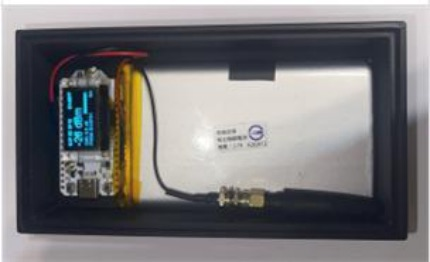
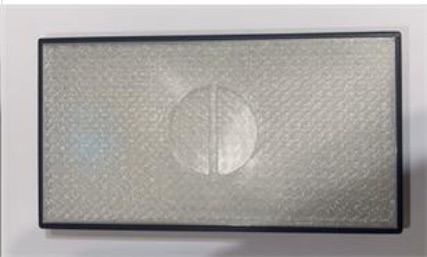
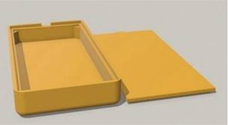
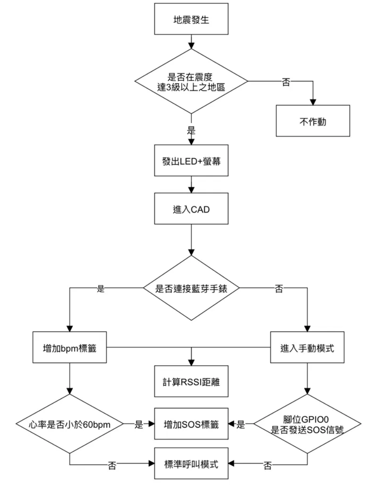
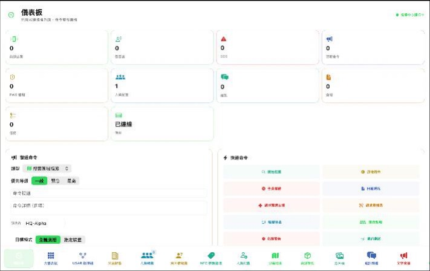
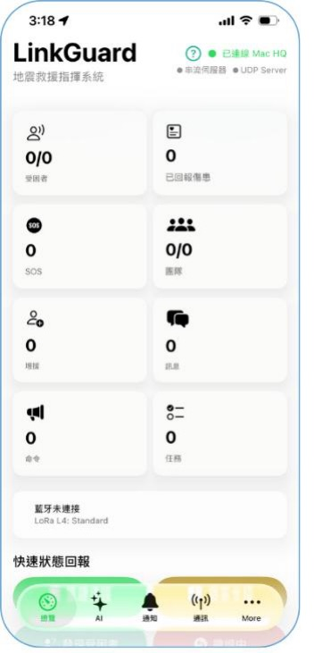
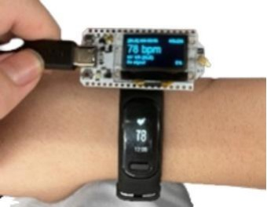

HQ 指揮中心端
hq.ino- 初始化 OLED、電池、LoRa 與 BLE，等待 Mac／iPad HQ App 連線。
- 將 App 的指揮命令轉為 CMD 封包，透過 433 MHz 廣播。
- 收到其他節點的 CMD 後解析內容，透過 BLE Notify 回傳 App。
- 定期回報電量、LoRa 檔位、命令數量與節點狀態。
韌體架構與封包格式收在摺疊區，不打斷一般訪客的閱讀節奏。
Firmware architecture and packet format — folded away so they don’t interrupt the main reading flow.
系統以 LoRa ESP32-S3＋LoRa 無線模組為核心，預設 L4 Profile： SF9、125 kHz、Coding Rate 4/6。LoRa ESP32-S3 負責感測、資料封裝、 顯示與任務排程，LoRa 模組負責長距離短封包通訊；三種程式角色分別對應 受困者節點、搜救節點與 HQ 指揮鏈。
The system is built around LoRa ESP32-S3 + a LoRa radio module. Its default L4 profile uses SF9, 125 kHz bandwidth and coding rate 4/6. LoRa ESP32-S3 handles sensing, packet construction, display and task scheduling, while LoRa carries long-range short packets. Three program roles cover victim, rescue and HQ command-chain nodes.
| 韌體 | 用途 | 工作頻率 |
|---|---|---|
| victim.ino | 受困者心跳、心率與 SOS | 910.1 MHz |
| rescue.ino | 搜救節點、BLE Gateway 與隊員命令 | 910.x／911.x、913 MHz |
| hq.ino | HQ 指揮鏈節點 | 433 MHz |
| Firmware | Role | Frequency |
|---|---|---|
| victim.ino | Victim heartbeat, heart rate and SOS | 910.1 MHz |
| rescue.ino | Rescue node, BLE gateway and team commands | 910.x / 911.x, 913 MHz |
| hq.ino | HQ command-chain node | 433 MHz |
三種韌體各自處理 LoRa、BLE 與本機警示，讓指揮命令、受困者狀態及緊急求救能在不同角色間傳遞。
Three firmware roles coordinate LoRa, BLE and local alerts to carry commands, victim status and emergency calls.
主迴圈採高速輪詢，以 millis() 獨立排程各項任務。Victim 一般模式每 15 秒回報，
SOS 時縮短為 3 秒；Rescue 一般模式每 3 秒回報，並提供 Mountain、Power Save、
Ultra Save、Quake 與 Silent 模式；HQ 每 5 秒發送 HQPING。
The high-speed polling loop schedules independent tasks with millis(). Victim
reports every 15 seconds, or every 3 seconds in SOS mode. Rescue reports every 3 seconds in
Normal mode and also provides Mountain, Power Save, Ultra Save, Quake and Silent modes.
HQ sends HQPING every 5 seconds.
Victim 會在 30 秒無互動後關閉 OLED，完成發送後讓無線電進入休眠，並依 RSSI 在 14／18／22 dBm 間動態調整功率；發送前再自動喚醒。
Victim turns off its OLED after 30 seconds of inactivity, sleeps the radio after transmission, wakes it before the next send, and adjusts output power among 14, 18 and 22 dBm according to RSSI.
發送前先執行 LoRa 頻道活動偵測，並搭配 Binary Exponential Backoff： BE 2–4、5 ms Slot、最多 3 次嘗試。系統使用 18 個搜尋頻道分流，另以 433 MHz 承載 HQ 指揮鏈、913 MHz 承載隊伍命令。
Before transmission, LoRa channel activity detection is combined with binary exponential backoff: BE 2–4, 5 ms slots and up to three attempts. Eighteen search channels distribute traffic, while 433 MHz carries the HQ chain and 913 MHz carries team commands.
Rescue 保存最近 10 個封包 ID、HQ 保存最近 20 個，避免重複套用；SOS 與 MAYDAY 採週期重播，緊急封包同時使用搜尋頻率與 913 MHz 雙頻送出，提升抵達率。
Rescue retains the latest 10 packet IDs and HQ retains 20 for deduplication. SOS and MAYDAY use periodic rebroadcasting, while emergency packets are sent on both the search frequency and 913 MHz to improve delivery.
線路資料使用 UTF-8 字串，以 | 分隔；共用 Header 依序為
pktId、pairCode、senderID、type、payload。接收端以 pktId 去重，
pairCode 則用於區分不同隊伍。
On-air data uses UTF-8 strings separated by |. The shared header is
pktId, pairCode, senderID, type and payload. Receivers deduplicate by
pktId, while pairCode separates teams.
// Victim SOS · 典型 27–32 bytes pktId|pair|sender|SOS|B{bat}|BPM{hr} // Rescue Team · 典型 30–40 bytes pktId|pair|sender|TEAM|B{bat}|V{count}|D{dept} // Mayday · 約 80–150 bytes（含 GPS） pktId|pair|sender|MAYDAY|B{bat}|N{name}|T{title}|LAT{lat}|LON{lon}|ACC{accuracy}
預設 L4 Profile 下，30-byte 封包空中時間約 0.25 秒、100-byte 約 0.65 秒、 200-byte 約 1.19 秒；系統依 255-byte payload 上限管理可變長度內容。
Under the default L4 profile, estimated time-on-air is approximately 0.25 seconds for 30 bytes, 0.65 seconds for 100 bytes and 1.19 seconds for 200 bytes. Variable-length content is managed within the 255-byte payload limit.
地震搜救模式由三段鏈路組成：智慧手錶 → ESP32 採集端（BLE 短距低功耗，讀取心率等生理數據）、 ESP32 採集端 → 指揮中心（923 MHz LoRa，繞射與穿透能力最佳，是主要的「破障傳輸」階段）、 指揮中心 → 搜救員手持終端（LoRa 廣播轉發，前線即時查看受困者心跳與狀態，作為救援排序依據）。
Earthquake mode chains three links: smartwatch → ESP32 collector (short-range, low-power BLE carrying heart rate and other vitals), ESP32 collector → command centre (923 MHz LoRa, the diffraction-capable "breakthrough" hop), and command centre → rescuer handheld (LoRa rebroadcast so the front line sees each victim's heart rate and status for dispatch priority).




判斷流程：地震發生後，信標先判斷是否位於震度達 3 級以上的地區，否則不作動；是則發出 LED 與螢幕提示並進入 CAD 模式。 若連接到藍牙手錶，封包加入 bpm 標籤並計算 RSSI 距離，心率低於 60 bpm 時自動加上 SOS 標籤；若未連接手錶則進入手動模式， 由腳位 GPIO0 決定是否發送 SOS，否則維持標準呼叫模式。
Decision flow: after a quake the beacon first checks whether it is in an area with intensity 3 or above; if not it stays idle. Otherwise it lights the LED and screen and enters CAD mode. With a Bluetooth watch connected it adds a bpm tag and computes RSSI distance, tagging SOS automatically when heart rate drops below 60 bpm; without a watch it enters manual mode, where GPIO0 decides whether to send SOS, otherwise it stays in standard call mode.
位置估算：受困者信標無法透過 GPS 回傳絕對座標。搜救員手持終端接收信標 LoRa 訊號後，依 RSSI 值估算距離，並於廢墟外圍多點量測後以三角定位法取得概略方位，再手動標記於地圖。 此方式精度受廢墟多路徑干擾影響，屬概略估算；未來可整合 UWB 模組（Decawave DW3000）提升室內定位精度。
Localisation: a buried beacon cannot report GPS coordinates. The rescuer's handheld estimates distance from the beacon's LoRa RSSI, takes readings from several points around the rubble and triangulates a rough bearing, which is then marked on the map by hand. Multipath in rubble limits accuracy, so this is an approximation; a UWB module (Decawave DW3000) is planned to improve indoor positioning.



介面於 Flutter／React 架構下實作，圖示為實機運作截圖。完整實驗數據與模擬結果見「實驗驗證」頁。
The interface is implemented in Flutter / React; images are screenshots from the running system. Full experimental data and simulation results are on the Experiments page.
從裝置保護、斷線容錯到命令權限，系統以災區持續運作與可控部署為設計前提。
From enclosure protection and link-loss tolerance to command authority, the system is designed for controlled, continuous disaster-field operation.
外殼採封閉式結構、接縫防潑水處理與連接埠防護蓋，降低雨水與粉塵進入風險；四角緩衝與內部固定結構可吸收跌落及運輸震動。操作按鍵保留戴手套時的辨識度，方便救援現場快速使用。
The enclosure uses a closed structure, splash-resistant seams and protected ports to reduce water and dust ingress. Corner buffers and internal mounting absorb drops and transport vibration, while controls remain identifiable when wearing gloves.
電源模組具備過充、過放、過流與短路保護。節點持續回報電量，低於警戒值時會在 OLED 與 App 顯示警報；電量進一步下降後，自動降低非必要更新頻率，優先保留 SOS、定位與基本通訊能力。
The power module protects against overcharge, over-discharge, overcurrent and short circuits. Nodes continuously report battery level; OLED and app warnings appear below the alert threshold, followed by reduced non-essential updates to preserve SOS, location and basic communications.
通訊中斷不會停止節點本地工作：感測、SOS 按鍵與警報判斷仍持續運作。系統會重試可用頻道並保留最新狀態；指揮端在逾時後標示節點離線，重新連線時再更新狀態，避免舊資料被誤認為即時資訊。
A lost link does not stop local sensing, the SOS button or alert decisions. The node retries available channels and retains its latest status. Command interfaces mark timed-out nodes offline and refresh their state after reconnection so stale data is not mistaken for live information.
系統不依賴單一中心節點維持前線通訊；個別節點失聯時，其餘節點仍可繼續交換資料。指揮端依心跳逾時標示失聯節點與最後狀態，替換節點則可透過相同隊伍配對流程重新加入，不需要重建整套網路。
Front-line communications do not depend on one central node. Other nodes continue exchanging data when an individual unit is lost. The command interface shows its last state and heartbeat timeout, while a replacement can rejoin through the same team-pairing process.
節點僅接受相同隊伍配對碼的資料，避免不同搜救隊伍互相套用命令。一般隊員、隊長與 HQ 依角色分級：狀態回報可由前線節點送出，隊伍命令由隊長發布，跨隊或 HQ 級指令則限指揮端操作。
Nodes accept data only from the matching team code, preventing commands from one rescue team being applied by another. Authority is role-based: field nodes report status, team leaders issue team commands, and cross-team or HQ-level instructions are restricted to command operators.
SOS、MAYDAY、ALERT 與高優先級 CMD 會優先於一般心跳與狀態回報。緊急訊息採較短重播週期，並透過搜索頻率與 913 MHz 雙頻送出；接收端以封包 ID 去重，降低重播造成的重複警報。
SOS, MAYDAY, ALERT and high-priority CMD traffic takes precedence over routine heartbeats and status reports. Emergency messages use shorter rebroadcast intervals and transmit on both the search frequency and 913 MHz; packet-ID deduplication prevents repeated alerts at the receiver.
網站所列頻率與 14／18／22 dBm 功率為系統測試 Profile。正式部署時，會依使用地區的頻譜規範、允許頻段、等效輻射功率、占空比與設備認證條件選用設定，並使用符合當地要求的無線模組、天線及電源配置。
The listed frequencies and 14 / 18 / 22 dBm levels are system test profiles. Operational deployment selects settings according to local spectrum rules, permitted bands, effective radiated power, duty-cycle limits and equipment certification, using compliant radio modules, antennas and power configurations.